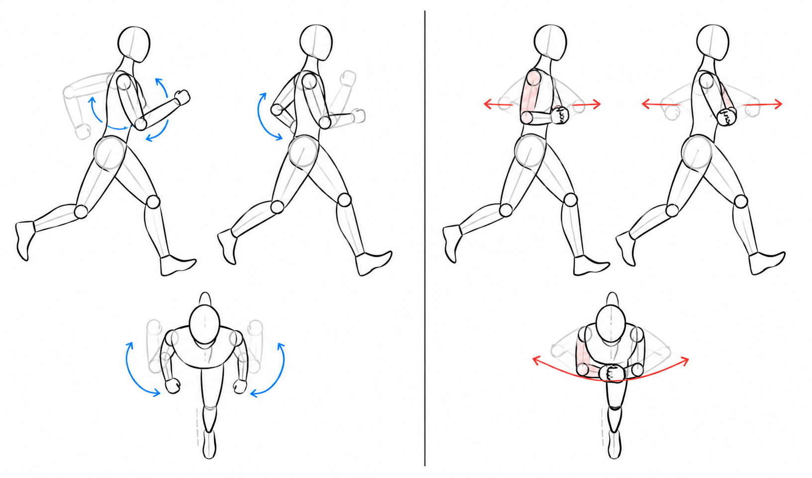

Five Fingers Typing
So I suffer from a permanent brachial plexus injury. I never needed help nor thought that I couldn’t do things that others could, so I never really bothered to improve or adapt the tools I use. But recently, I really wanted to do better and adjust the material to myself, rather than adjust myself to the existing tools. I’m sure this is gonna be a bit hard, though. First, I was running with a running group and was discussing this with one guy who suggested that I use some kind of support thingy. Usually, when I run, I hold my affected arm with my other hand, so the shoulder movement is more sideways rather than forward and backward like it normally would be (see this next figure). I feel like this resists my running and requires more energy. I’ll probably post something about that when I do more research.

Then, I was randomly asked by a guy whether it was hard for me to write on a keyboard. I had never really thought about it because it came naturally to me, and I always thought I typed rather fast. BUT then I asked myself the question: do I actually type fast? Well, to answer that, I tested myself on some websites like 10FastFingers, and I scored around 50 WPM, which is actually a bit above average. Then I did some research on how to type faster, which gave me the info that there are reference points on a two-hand keyboard on the J and F keys. I had never noticed them because I don’t actually use them. Then I googled whether there are keyboards designed for one hand, and there are. So now I intend to test them. One thing though: I already have the muscle memory of the key order of a normal keyboard, and I’m not sure whether these one-handed keyboards have the same layout or a different one. But I reckon it is probably different in order to be optimized for single-hand use. If the key order is different, then two possibilities emerge. One would be to exercise and learn the new combinations, but then I might become too dependent on the new keyboard. Although I’m actually not sure whether the brain would be able to learn how to switch between the two layouts depending on which keyboard I’m using. The other option would be to customize one and change the key combinations of the physical one-hand keyboard while keeping something closer to the layout I already know, which seems more logical to me. So I’ll test both and compare the two approaches, and see what that leads to.